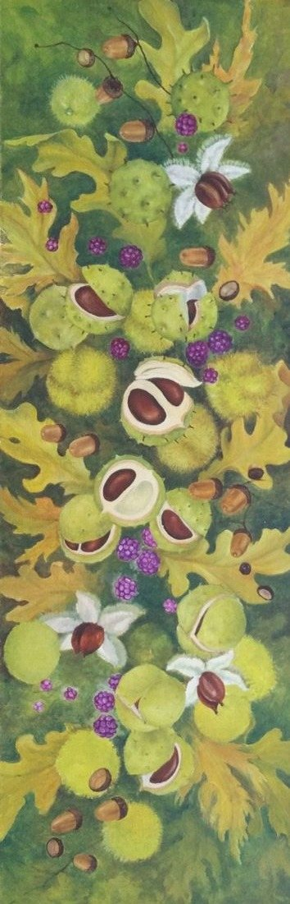

Select the picture to see it larger.
On a wall


Shown in its oak frame. The painting itself is 60 × 20 cm. Above a cabinet about 90 cm wide. The room is an illustration.
Autumn abundance
- Medium
- Oil on canvas board
- Size
- 60 × 20 cm
- Year
- 2020
- Price
- Not for sale
- Catalogue no.
- 227
[A few lines from Joan about this painting]
 Zantedeschia
Zantedeschia Pink Peonies
Pink Peonies Brown Bearded Iris Study
Brown Bearded Iris Study